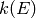

Contains the Network class, which defines an internal representation of a unimolecular reaction network. This provides a convienent means of keeping track of things while we are performing the master equation calculation.
A representation of a unimolecular reaction network. The attributes are:
| Attribute | Type | Description |
|---|---|---|
| index | int | A unique integer identifier for the network |
| isomers | list | A list of the unimolecular isomers in the network |
| reactants | list | A list of the bimolecular reactant channels in the network |
| products | list | A list of the bimolecular product channels in the network |
| pathReactions | list | A list of reaction objects that connect adjacent isomers (the high-pressure-limit) |
| bathGas | dict | A dictionary of the bath gas species (keys) and their mole fractions (values) |
| collisionModel | CollisionModel | The collision model to use |
| netReactions | list | A list of reaction objects that connect any pair of isomers |
| valid | bool | True if the rate coefficients for the network have been computed, False if not |
| explored | list | A list of the unimolecular isomers whose reactions have been fully explored |
Select a suitable list of energies to use for subsequent calculations. The procedure is:
You must specify either the desired grain spacing grainSize in J/mol or the desired number of grains Ngrains, as well as a temperature Tmax in K to use for the equilibrium calculation, which should be the highest temperature of interest. You can specify both grainSize and Ngrains, in which case the one that gives the more accurate result will be used (i.e. they represent a maximum grain size and a minimum number of grains). An array containing the energy grains in J/mol is returned.
Calculate and return an array containing the density of states for each isomer and reactant channel in the network. Elist represents the array of energies in J/mol at which to compute each density of states. The ground-state energies E0 in J/mol are used to shift each density of states for each configuration to the same zero of energy. The returned density of states is in units of mol/J.
Calculate and return arrays containing the microcanonical rate coefficients  for the isomerization, dissociation, and association path reactions in the network. Elist represents the array of energies in J/mol at which to compute each density of states, while densStates represents the density of states of each isomer and reactant channel in mol/J. The temperature T is K is used in certain circumstances when cannot be determined without it, and in the detailed balance expression to obtain the reverse kinetics.
Calculate the phenomenological rate coefficients  for the
network at the given temperatures Tlist in K and pressures Plist in
Pa using the energy grains Elist in J/mol. The method string is
used to indicate the method to use, and should be one of "modified
strong collision", "reservoir state", or
"chemically-significant eigenvalues".
for the
network at the given temperatures Tlist in K and pressures Plist in
Pa using the energy grains Elist in J/mol. The method string is
used to indicate the method to use, and should be one of "modified
strong collision", "reservoir state", or
"chemically-significant eigenvalues".
Return True if the species is a unimolecular isomer in the network, and False if not.
Generates a file containing a rendering of the current potential energy surface for this reaction network. The file is saved to at location fstr on disk. The type of file saved is determined automatically from the extension on fstr; valid file types are PDF, SVG, PS, and PNG. The units to use for energy values can be specified using the Eunits option; allowed values are 'J/mol', 'kJ/mol', 'cal/mol', 'kcal/mol', and 'cm^-1'. The drawing is performed using the Cairo 2D graphics package; both Cairo and its Python wrapper must be installed.
Generate the full master equation matrix for the network at the specified temperature T in K and pressure P in Pa and for the set of energy grains Elist in J/mol. Returns the full master equation matrix, the indices used to place the isomers into the rows of the matrix, and the computed densities of states in mol/J.
Return an array of energy grains that have a minimum of Emin, a maximum of Emax, and either a spacing of dE or have number of grains nGrains. The first three parameters are in J/mol, as is the returned array of energy grains.
Mark the network as in need of a new calculation to determine the pressure-dependent rate coefficients
Print a formatted list of information about the current network. Each molecular configuration - unimolecular isomers, bimolecular reactant channels, and bimolecular product channels - is given along with its energy on the potential energy surface. The path reactions connecting adjacent molecular configurations are also given, along with their energies on the potential energy surface. The level parameter controls the level of logging to which the summary is written, and is DEBUG by default.